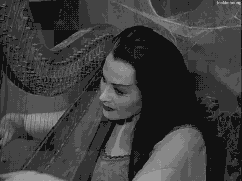
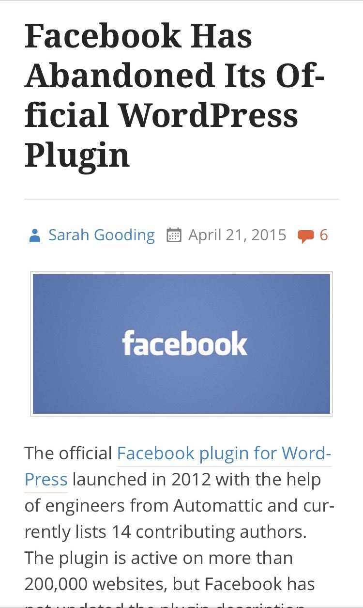
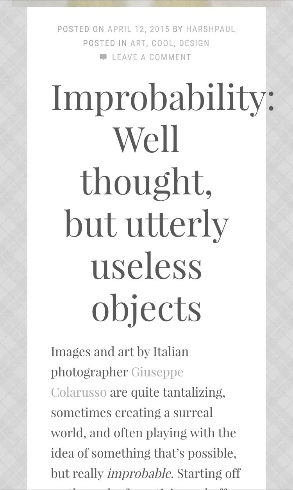

Using Musical Scales to Build Harmonious Typography
As a curious developer and an amateur designer, I’m very curious about the reasoning behind design decisions in web projects. I’m also very eager to automate those decisions when I can automate them well. The web is full of resources on reasoning behind design decisions. You can easily find resources on color theory, font pairing, and grid proportions. Resources on type scale (or choosing font sizes) are less available. And too often in workplace conversations, the best answer a developer gets from the designer is “I just picked font sizes that looked good.”
This is where I brought in another area of aesthetics that I’m familiar with: music. As an amateur musician with music theory training, I had the idea that the mathematical proportions in musical scales could be used as patterns for type scales in web design.
Musical Intervals & Math
We’ll begin by looking at the relationship between music and math. Every musical note is a specific frequency and intervals (distances between two notes) are measurable, predictable distances.
Every Note Is a Number
Every musical note is a number: a frequency vibrating a certain number of times per second (measured in hertz). Whenever an orchestra tunes to Concert A, they usually tune to 440Hz. When a beginning piano student learns to start playing at Middle C, that note is roughly 131Hz (on a well-tuned piano). That’s what the process of tuning an instrument does: it ensures that when the musician plays a certain note, a specific frequency is heard by the audience.
Of course, you probably already know that musical pitch is related closely to measurable distance. The longer the distance of the instrument, the lower the pitch. That's how a trombone works:

On a harp, the longest strings produce the lowest notes; the shortest strings produces the highest notes.

And the largest (long and wide) keys on a xylophone produces low notes, while the smallest keys produce the highest notes.
Since all musical notes are measured by specific frequencies, it follows that all musical intervals are measurable mathematical proportions. Every time you play the same musical interval (regardless of which octave or key you play in), the same mathematical proportion governs the distance between the frequencies of the two notes.
An Octave Increases 2×
Every time you play up an octave, the frequency doubles. If you move down an octave from your starting note, the frequency is divided by two.
| Concert A = 440Hz | A5 = 880Hz |
|---|---|
| Middle C ~= 131Hz | C4 ~=262Hz |
The following wave patterns represent two notes an octave apart. The bottom wave is twice the frequency of the top wave (it has twice as many cycles per second), so it would be exactly one octave higher than the other wave.


A Fifth Increases ~1.5×
Every time you play notes that are a fifth apart, the frequency of the higher note is 1.5× the frequency of the lower note. If you move down a fifth from your starting note, the frequency of the lower note is divided by 1.5.
| A3 = 220Hz | E4 ~=330Hz |
|---|---|
| C3 ~= 131Hz | G3 ~=196Hz |
These wave patterns represent two notes a fifth apart. The bottom wave is 1.5× the frequency of the top wave, so it would be exactly one fifth hihger than the other wave.

A Half-Step Increases 1.0595×
This is a pretty precise number, but don’t worry: you won’t be required to memorize it. The half-step is important because it’s the building block for all other intervals and scales.
I should clarify that the half-step is the building block for traditional western scales: the kind of music you usually hear on the radio, at restaurants, in the background of movies and television.
If you play up and down a piano using both black and white key, you‘ll be playing a half-step scale. All intervals are multiple half-steps. In mathematical terms, all intervals are exponents of the half-step interval.
The following table shows how to get from A to B two different ways. The first two lines show how to calculate the interval by multiplying by a half-step twice. The final line shows how to calculate the interval by multiplying by a half-step squared.
| A (440Hz) | × | 1.0595 | = | A# (466.16Hz) |
|---|---|---|---|---|
| A# (466.16Hz) | × | 1.0595 | = | B (493.88Hz) |
| A (440Hz) | × | 1.05952 | = | B (493.88Hz) |
All musical intervals are mathematically definable and predictable. Therefore, the scales we play by combining those intervals follow set mathematical patterns as well.
Typography & Modular Scales
Creating visual hierarchy with typography is also a matter of following set mathematical patterns. Let’s take a look at some existing ideas and tools for building type scales with mathematical patterns
Single-Stranded Modular Scales
In a single-stranded modular scale, every interval is the same. You can quickly create a single-stranded modular scale by picking a proportion (1.5×) and a base font size (18px), then each font size is the proportion times the previous size.
A musical half-step scale is a single-stranded modular scale: every interval is 1.0595.
A musical whole-step scale is also a single-stranded modular scale: every interval is 1.05952.
Multi-Stranded Modular Scales
A single-stranded scale uses a single interval as a multiplier to create all the measurements. A multi-stranded modular scale uses patterns of intervals, or multiple starting points for similar intervals, or a little of both.
Major & minor scales are created by alternating whole & half steps (WWHWWWH) / (WHWWHWW). These patterns repeat every octave, creating a mult-stranded modular scale.
Modular Scales
in Sass
There are several Sass libraries and online tools available for creating modular type scales. All of them can create single-stranded scales. The first and last items also create multi-stranded modular scales quite handily as well.
See & Hear
In this section, we’ll look at font sizes created with musical intervals, while listening to audio samples of those intervals.
Interval: Octave
Notes Are Numbers
Every musical note is a number: a frequency vibrating a certain number of times per second (measured in hertz).
Interval: Fifth
Notes Are Numbers
Every musical note is a number: a frequency vibrating a certain number of times per second (measured in hertz).
Interval: Third
Notes Are Numbers
Every musical note is a number: a frequency vibrating a certain number of times per second (measured in hertz).
Scale: Major Scale
Heading 1
Heading 2
Heading 3
Blockquote
Paragraph
Scale: Pentatonic
Heading 1
Heading 2
Heading 3
Blockquote
Paragraph
Scale: Major Triad
Heading 1
Heading 2
Heading 3
Blockquote
Paragraph
Responsive Musical Scales
Of course, we can’t really talk web design without advice about dealing with a wide variety of screen sizes. It just so happens that we can use certain musical scales to optimize the type scale for the screen size.
A scale with more notes per octave is better for small screens. It provides a distinct visual hierarchy while increasing font sizes more slowly to conserve screen space… and to avoid headline problems.
 
Scale with fewer notes per octave, however, are better for large screens. The font sizes increase more quickly up the scale to advantage of the larger screen and wider layout.
Intro to TypeTuner
I’ve written a small Sass library to automate the creation of type scales based on musical scales: TypeTuner. The following Sass mixins provide developers access to its powerful musical math
TypeTuner.com
@include set-hierarchy( $list );
The set-hierarchy() mixin takes a list of labels. These are your labels for the steps in your font size hierarchy. This mixin will replace the default list (sm, p, bq, ssh, sh, h, hero) with the list you pass it. Order your labels from smallest to largest.
@include add-breakpoint(
$label,
$min-width,
$font-size,
$line-height,
$scale
);
The add-breakpoint() mixin adds a breakpoint to TypeTuner’s math with the following parameters. $label acts as a key or unique identifier for this breakpoint. $min-width is the min-width for the media query. $font-size is the base font-size for body copy. $line-height is the base line-height for body copy. These two numbers form a vertical rhythm to which all TypeTuner’s font styles are aligned. Finally, $scale is the name of one of the scales provided in the default $scales map.
@include remove-breakpoint( $label );
If you want to remove a breakpoint and all its associate data, pass its label as a parameter to remove-breakpoint(). This mixin is useful for clearing out the default options.
@include type-tune( 'extend' | 'class' );
This mixin creates all the font-size and line-height properties for each of your labels at each of your breakpoints. It takes a single parameter: the word extend or class. If you choose extend, all the output selectors will be your labels list items prefixed with %tt-. If you choose class, the selectors will be your labels prefixed with .tt-.